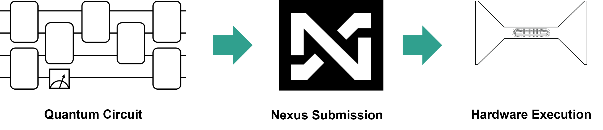

Native Arbitrary Angle Hardware Gates¶
Native gates are gates on a quantum computer that the hardware physically executes. Different quantum computers may have different gates that are physically executed on the hardware. Writing a gate in a quantum circuit submitted to hardware doesn’t guarantee its physical execution on the device. For instance, on Quantinuum quantum computers, a Hadamard gate written in the circuit is not the actual gate executed. When users submit circuits using a Hadamard gate, the gate is translated into a \(U1q\) gate followed by a \(Rz\) gate, which the ion trap device physically executes.
{kind=link}
The Quantinuum hardware compiler handles the translation from circuits users submit to the native gates run on hardware. In the Quantum Charge-Coupled Device (QCCD) architecture, the hardware compilation includes the assignment of which physical qubit corresponds to which qubit in a circuit as well as how qubits will be transported around the device. Since transport, as well as gating, incurs a small amount of error with each operation, the compiler aims to minimize the number of gates that need to be executed.
This article showcases two workflows:
prepare and submit a circuit with the \(SU(4)\) gate with a Quantum Volume Test (QVT) use case. The quantum volume is an important metric to benchmark the quality of a quantum computer.
perform a comparison of Quantum Fourier Transform (QFT) circuits with and without use of Quantinuum’s native arbitrary-angle ZZ gate. The inverse QFT is an important primitive used in the Phase Estimation Algorithm (PEA).
Arbitrary Angle ZZ Gates¶
Quantinuum System Model H1’s native gate set includes arbitrary angle ZZ gates. This is beneficial for reducing the 2-qubit gate count for many quantum algorithms and gate sequences.
Note that \(RZZ(\frac{\pi}{2}) = ZZ()\).
Quantum circuits that use the gate sequence CNOT, RZ, CNOT can be replaced with the arbitrary angle ZZ gate, shown below. Arbitrary-angle two-qubit gates can be used to improve fidelity of the output and to decrease two-qubit gate depth. Specifically, the error from arbitrary-angle two-qubit gates is less than the fixed-angle two-qubit gate for small angles. The error from both gates is the same at angle \(\frac{\phi}{2}\). The error from arbitrary-angle two-qubit gates increases with angle size.
OpType.Rz and OpType.CX operations in pytketOpType.ZZPhase (\(RZZ(\theta)\)) operation in pytketArbitrary Angle SU(4) Gates¶
The General \(SU(4)\) Entangler gate is available in TKET as OpType.TK2. This gate is a combination of OpType.XXPhase, OpType.YYPhase and OpType.ZZPhase, and requires three angles as input, \(\alpha\), \(\beta\) and \(\gamma\). The definition of the gate is provided below:
This gate can be used as follows within TKET.
from pytket.circuit.display import render_circuit_jupyter
from pytket.circuit import Circuit
from sympy import Symbol
symbols = [Symbol("a"), Symbol("b"), Symbol("c")]
circuit = Circuit(2)
circuit.TK2(*symbols, *circuit.qubits)
render_circuit_jupyter(circuit)
This circuit can be converted to a QASM string using the circuit_to_qasm_str function and by specifying the Quantinuum header hqslib1.
from pytket.qasm.qasm import circuit_to_qasm_str
print(circuit_to_qasm_str(circuit, header="hqslib1"))
Submission of the gate requires the desired native two-qubit gate to be specified in qnexus.QuantinuumConfig via the keyword argument, target_2qb_gate. Three values can be supplied as a string:
TK2: to use the arbitrary-angle \(SU(4)\) gate;ZZPhase: to use the arbitrary-angle \(ZZ\) gate;ZZMax: to use the fixed-angle \(ZZ\) gate.
import qnexus
config_tk2 = qnexus.QuantinuumConfig(device_name="H1-1E", target_2qb_gate="TK2")
config_zzphase = qnexus.QuantinuumConfig(device_name="H1-1E", target_2qb_gate="ZZPhase")
config_zzmax = qnexus.QuantinuumConfig(device_name="H1-1E", target_2qb_gate="ZZMax")
Quantum Fourier Transform¶
The Quantum Fourier Transform (QFT) is an algorithm that serves as a sub-routine in multiple quantum algorithms, including Shor’s factoring algorithm. Below are two functions, written in pytket, that work together to implement the QFT.
The QFT function can be used to create the QFT. It takes the following arguments:
n: number of qubits to use in the QFT circuitarbZZ: specify whether to use the arbitrary-angle ZZ gate or not,True/False, default:Falseapprox: if set to integerk, then controlled rotations by angles less than \(\frac{\pi}{2}^{k}\) do not occur
Note: In many presentations of the QFT, the circuit includes a round of SWAP gates at the end of the circuit that reverses the order of the qubits. The QFT circuits in this tutorial do not include this final SWAP step.
Note: In pytket the \(RZZ\) gate is implemented with the \(ZZPhase\) circuit function.
import numpy as np
from pytket import Circuit
from pytket.circuit.display import render_circuit_jupyter
def control_phase(circ, theta, q0, q1, arbZZ=False):
"""circuit gadget for performing controlled-[1 0;0 e^i theta]
Inputs:
circ: pytket Circuit object
theta: Z rotation angle (in units of pi)
q0: control qubit
q1: target qubit
arbZZ (bool): enables arbitrary angle RZZ gate
"""
if arbZZ == False:
# decompose into CNOTs
circ.Rz(theta / 2, q1)
circ.CX(q0, q1)
circ.Rz(-theta / 2, q1)
circ.CX(q0, q1)
circ.Rz(theta / 2, q0)
elif arbZZ == True:
circ.Rz(theta / 2, q0)
circ.Rz(theta / 2, q1)
circ.ZZPhase(-theta / 2, q0, q1)
def QFT(n, **kwargs):
"""
Function to implement the Quantum Fourier Transform
n : number of qubits
approx: if set to integer k, then sets that largest
value of pi/2**k occuring in controlled rotation
returns circ: pytket Circuit object
"""
# optional keyword arguments
arbZZ = kwargs.get("arbZZ", False)
approx = kwargs.get("approx", None)
# initialize
circ_name = "QFT-arbZZ" if arbZZ else "QFT-fixed"
circ = Circuit(n, n, name=circ_name)
for j in range(n - 1):
q = n - 1 - j
circ.H(q)
for i in range(j + 1):
if approx == None or approx >= j + 1 - i:
control_phase(
circ, 1 / (2 ** (j + 1 - i)), q - 1, n - 1 - i, arbZZ=arbZZ
)
circ.H(0)
return circ
QFT with Fixed Angle Gates¶
First, create the circuit with fixed-angle gates.
n_qubits = 12
qft_fixed = QFT(n_qubits, arbZZ=False)
render_circuit_jupyter(qft_fixed)
QFT with Arbitrary Angle ZZ Gates¶
Second, create the circuit with arbitrary-angle ZZ gates.
qft_arbZZ = QFT(n_qubits, arbZZ=True)
render_circuit_jupyter(qft_arbZZ)
Compare Results¶
Now we compare the results of the QFT circuits with and without use of the arbitrary-angle ZZ gates on hardware.
State Fidelity¶
The QFT circuit applied to the computational basis state \(|x\rangle\) creates the state
\begin{align}
QFT|x\rangle&=\frac{1}{\sqrt{d}}\sum_{y=0}^{d-1} e^{2\pi i x y/d} |y\rangle\
&= \bigotimes_{j=0}^{n-1}\frac{1}{\sqrt{2}}\sum_{y_j=0}^1e^{2\pi i x 2^j y_j/d}|y_j\rangle\
&= \bigotimes_{j=0}^{n-1}\frac{1}{\sqrt{2}}\big(|0\rangle+e^{2\pi i x 2^j /d}|1\rangle\big)
\end{align}
where \(d=2^n\). Note that this state is unentangled. Therefore the state fidelity can be measured by applying only single-qubit gates to map the state back to the computational basis. In the example circuits above, the initial state \(|x\rangle=|0\rangle\), and so the output state is
The state fidelity can then be measured by applying a Hadamard gate to each qubit and recording the probability of measuring \(|0\rangle\).
We define a function to measure all qubits in the Hadamard basis and append this circuit to the QFT circuits:
def meas_Had_basis(orig_circ, n_qubits):
circ = orig_circ.copy()
for j in range(n_qubits):
circ.H(j)
circ.add_barrier(range(n_qubits))
circ.measure_all()
return circ
qft_fid_fixed = meas_Had_basis(qft_fixed, n_qubits)
render_circuit_jupyter(qft_fid_fixed)
qft_fid_arbZZ = meas_Had_basis(qft_arbZZ, n_qubits)
render_circuit_jupyter(qft_fid_arbZZ)
Define Nexus Configuration¶
Use qnexus to retrieve an existing project from the database (arb-angle-demonstration). The qnexus.QuantinuumConfig targets the H2-Emulator, hosted on Nexus.
import datetime
import qnexus
quantinuum_config = qnexus.QuantinuumConfig(device_name="H2-Emulator")
job_name_suffix = datetime.datetime.now().strftime("%Y_%m_%d-%H_%M_%S")
project = qnexus.projects.get_or_create(name="arb-angle-demonstration")
token = qnexus.context.set_active_project(project)
Circuit Compilation¶
ref_fixed = qnexus.circuits.upload(qft_fid_fixed, name="Fixed")
ref_arbzz = qnexus.circuits.upload(qft_fid_arbZZ, name="ArbZZ")
Compile the circuits to use Quantinuum native gates.
ref_compile_job_arbzz = qnexus.start_compile_job(
circuits=[ref_arbzz],
backend_config=quantinuum_config,
name=f"nexus-compilation-job-arbzz-{job_name_suffix}",
optimisation_level=1
)
qnexus.jobs.wait_for(ref_compile_job_arbzz)
compiled_circuit_ref_arbzz = qnexus.jobs.results(ref_compile_job_arbzz)[0].get_output()
compiled_circuit_arbzz = compiled_circuit_ref_arbzz.download_circuit()
ref_compile_job_fixed = qnexus.start_compile_job(
circuits=[ref_fixed],
backend_config=quantinuum_config,
name=f"nexus-compilation-job-fixed-{job_name_suffix}",
optimisation_level=1
)
qnexus.jobs.wait_for(ref_compile_job_fixed);
compiled_circuit_ref_fixed = qnexus.jobs.results(ref_compile_job_fixed)[0].get_output()
compiled_circuit_fixed = compiled_circuit_ref_fixed.download_circuit()
Circuit Depth and Two-Qubit Gates¶
Note that the circuit depth number of two-qubit gates for the fixed-angle vs. arbitrary angle is less. The difference increases as more qubits are used.
print("Circuit Depth for fixed-angle QFT:", compiled_circuit_fixed.depth())
print("Circuit Depth for arbitrary-angle QFT:", compiled_circuit_arbzz.depth())
print("Circuit Depth Difference:", compiled_circuit_fixed.depth() - compiled_circuit_arbzz.depth())
print("Number of two-qubit gates for fixed-angle QFT:", compiled_circuit_fixed.n_2qb_gates())
print("Number of two-qubit gates for arbitrary-angle QFT:", compiled_circuit_arbzz.n_2qb_gates())
print("Number of two-qubit gates Difference:", compiled_circuit_fixed.n_2qb_gates() - compiled_circuit_arbzz.n_2qb_gates())
Run the Circuit¶
Now run the circuits on Quantinuum systems. First compiling the circuits to the backend, then submitting to the device.
n_shots = 100
ref_execute_job_fixed = qnexus.start_execute_job(
circuits=[compiled_circuit_ref_fixed],
n_shots=[n_shots],
backend_config=quantinuum_config,
name=f"execution-job-fixed-{job_name_suffix}"
)
qnexus.jobs.wait_for(ref_execute_job_fixed, timeout=1000)
ref_execute_job_arbzz = qnexus.start_execute_job(
circuits=[compiled_circuit_ref_arbzz],
n_shots=[n_shots],
backend_config=quantinuum_config,
name=f"nexus-execution-job-arbzz-{job_name_suffix}"
)
qnexus.jobs.wait_for(ref_execute_job_arbzz, timeout=1000)
Retrieve Results¶
qft_fid_fixed_compiled_result = qnexus.jobs.results(ref_execute_job_fixed)[0].get_output().download_result()
qft_fid_arbZZ_compiled_result = qnexus.jobs.results(ref_execute_job_arbzz)[0].get_output().download_result()
Analyze Results¶
Here the distribution of bitstrings is retrieved to inspect.
qft_fid_fixed_compiled_distro = qft_fid_fixed_compiled_result.get_distribution()
qft_fid_arbZZ_compiled_distro = qft_fid_arbZZ_compiled_result.get_distribution()
For the QFT with the appended measurement in the Hadamard basis, we expect the QFT to return all 0’s in the result bitstring. Investigating the results for both the fixed and arbitrary ZZ versions of QFT, we see this is the bitstring with the highest frequency. This is good, this is what is desired.
qft_fid_fixed_compiled_distro
qft_fid_arbZZ_compiled_distro
Comparing the results between the fixed and arbitrary ZZ versions we see that the fidelity is higher using the arbitrary ZZ gate.
print(
"Fixed angle QFT:",
qft_fid_fixed_compiled_distro[(0, 0, 0, 0, 0, 0, 0, 0, 0, 0, 0, 0)],
)
print(
"Arbitrary Angle ZZ QFT:",
qft_fid_arbZZ_compiled_distro[(0, 0, 0, 0, 0, 0, 0, 0, 0, 0, 0, 0)],
)
Quantum Volume Test¶
Quantum volume is a benchmarking test that was initially proposed by IBM (arXiv:1811.12926). It is a test that aims to verify the quality as well as the quantity of qubits on the machine. The test does this by performing rounds of single and two qubit gates between random pairs of qubits for as many rounds as qubits in the test. For example, for quantum volume of \(2^N\) where \(N=4\), there are 4 layers of repeated operations over 4 qubits. It verifies the quantum computer can perform quality computation with reasonable-sized circuits. The advantage to using quantum volume is that it gives users the confidence that not only do they have the number of qubits to support running their circuit, but the two-qubit gate fidelity meets the threshold to support circuits of significant depth as well. Quantum algorithms need not only qubits, but the ability to run many gates. Quantinuum has steadily been increasing the quantum volume of Quantinuum machines.
First we import the functions we need in TKET.
import numpy as np
from pytket import Circuit, OpType
from pytket.circuit.display import render_circuit_jupyter
To run a circuit containing the general \(SU(4)\) gate on Quantinuum machines, the configuration for QuantinumConfig needs to have OpType.TK2 set as the native two-qubit gate. This is accomplised by setting target_2qb_gate, compilation and execution with OpType.TK2 is enabled.
import qnexus
config_tk2 = qnexus.QuantinuumConfig(device_name="H1-Emulator", target_2qb_gate="TK2")
config_zzphase = qnexus.QuantinuumConfig(device_name="H1-Emulator", target_2qb_gate="ZZPhase")
A new project is defined for the \(SU(4)\) use-case.
project = qnexus.projects.get_or_create("qvt_usecase", description="Project containing job data for Quantum Volume Test use-case")
qnexus.context.set_active_project(project)
To set up the Quantum Volume test, we start by building up the repeated circuit elements. The function in the code cell below defines a TKET Circuit Box with pytket.circuit.CircBox. Circuit Boxes are useful for composing larger circuits from smaller subcircuits that utilize the same set of gates.
The Circuit box below contains a blueprint for the decomposition of a random general \(SU(4)\) unitary distributed with the Haar Measure into a circuit primitive over 2 qubits. The implementation is based on arxiv.0609050. The random \(SU(4)\) unitary is generated using scipy.stats.unitary_group.
from pytket.circuit import CircBox, Circuit, Unitary2qBox
import numpy as np
from scipy.stats import unitary_group
def haar_random_su4_box() -> CircBox:
r = unitary_group.rvs(dim=4)
r[0, :] /= np.linalg.det(r)
circuit = Circuit(2)
box = Unitary2qBox(r)
circuit.add_unitary2qbox(box, 0, 1)
return CircBox(circuit)
Circuit Boxes can be visualized utilizing the get_circuit function.
from pytket.circuit.display import render_circuit_jupyter
circuit = haar_random_su4_box().get_circuit()
render_circuit_jupyter(circuit)
In the cell below, the CircBox is inspected and further optimisations are applied. DecomposeBoxes simplifies OpType.CircBox operations into the underlying gate operations recursively. Further decompositions are performed with the KAKDecomposition function. We specify use the OpType.TK2 gate in this function call as the target 2-qubit gate after decomposition.
The pytket sequence pass, consists of two passes:
Both passes are arguments to pytket.passes.SequencePass. SequencePass allows both passes to be applied to the input circuit with one apply call.
from pytket.passes import DecomposeBoxes, KAKDecomposition, SequencePass
from pytket.circuit import OpType
sequence_pass = SequencePass(
[DecomposeBoxes(), KAKDecomposition(target_2qb_gate=OpType.TK2)]
)
sequence_pass.apply(circuit)
render_circuit_jupyter(circuit)
Now we’re ready to set up a Quantum Volume test circuit using the Circuit Box we created. The steps to set up the circuit are straightforward using the CircBox instances to build up the full circuit.
circuit = Circuit(4)
for _ in range(4):
permutation = np.random.permutation(circuit.qubits)
for i in range(0, 4, 2):
box = haar_random_su4_box()
circuit.add_circbox(box, [permutation[i], permutation[i + 1]])
circuit.measure_all();
The SequencePass defined in the code cell in the previous subsection is used below on the QVT circuit and we can see the full set of gates in the circuit as well as the result of optimizations performed by KAKDecomposition.
from pytket.circuit.display import render_circuit_jupyter
sequence_pass.apply(circuit)
render_circuit_jupyter(circuit)
ref_su4 = qnexus.circuits.upload(circuit=circuit, name="su4_circuit")
ref_compile_job_tk2 = qnexus.start_compile_job(
circuits=[ref_su4],
name="compilation-tk2-job",
backend_config=config_tk2,
optimisation_level=2
)
qnexus.jobs.wait_for(ref_compile_job_tk2, timeout=1000)
ref_compile_circuit_tk2 = qnexus.jobs.results(ref_compile_job_tk2)[0].get_output()
compiled_circuit_tk2 = ref_compile_circuit_tk2.download_circuit()
from pytket.circuit.display import render_circuit_jupyter
render_circuit_jupyter(compiled_circuit_tk2)
ref_execute_job_tk2 = qnexus.start_execute_job(
circuits=[ref_compile_circuit_tk2],
name="execution-tk2-job",
backend_config=config_tk2,
n_shots=[100]
)
qnexus.jobs.wait_for(ref_execute_job_tk2, timeout=1000)
result_tk2 = qnexus.jobs.results(ref_execute_job_tk2)[0].download_result()